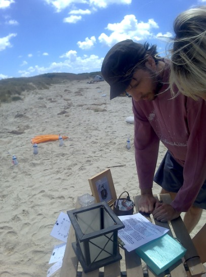
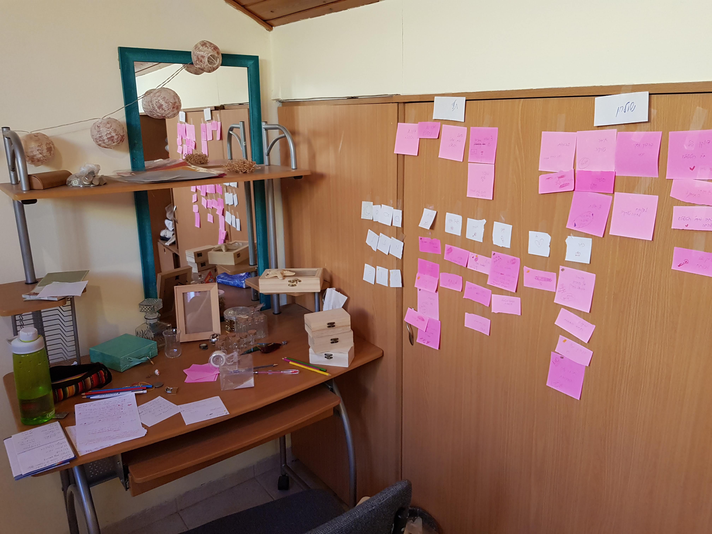
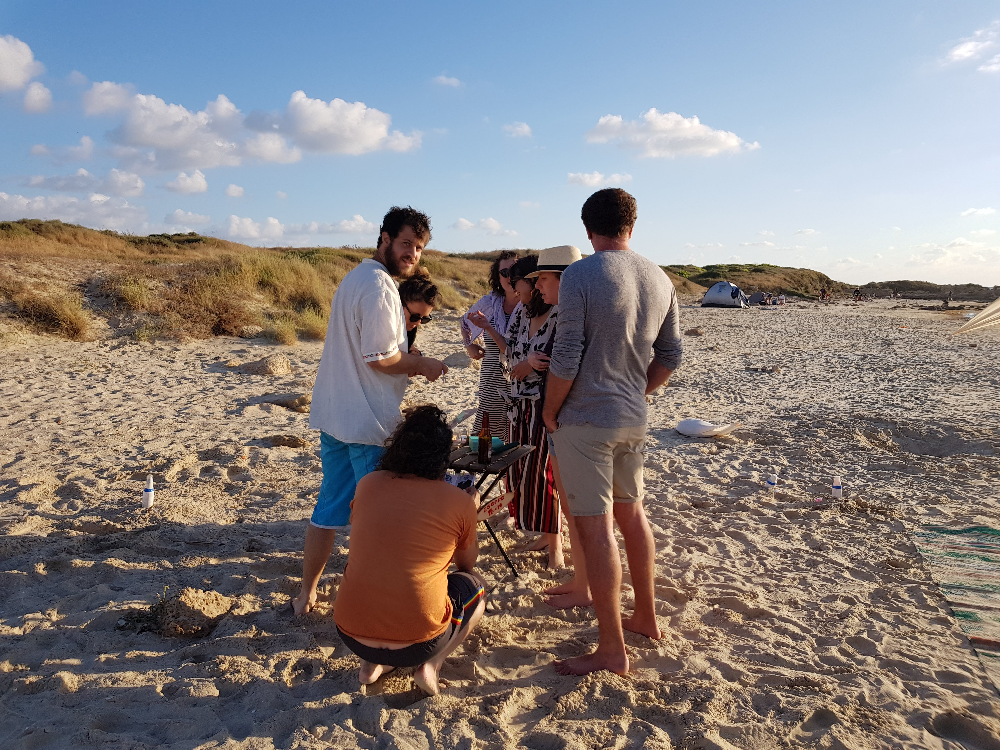
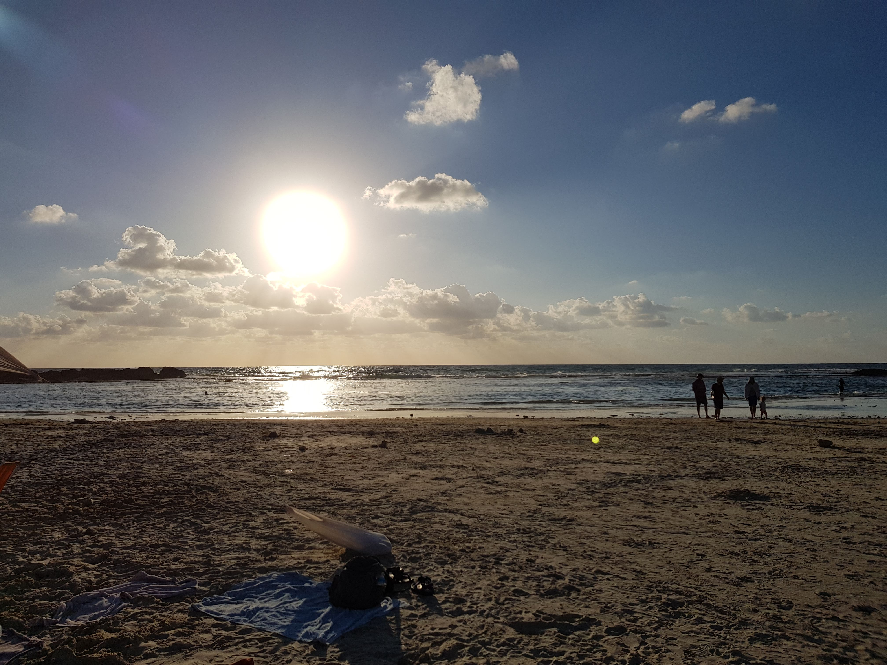

Escape Room Design

Background
Due to the COVID 19 extravaganza, trapped in months of quarantine, I thought I could do with a bit of time-consuming artsy-crafty-designy project and that was a fantastic opportunity to do some design thinking exercise.
My partner's birthday was coming up, and going to escape rooms is a bit of a tradition of ours. This is what we like to do, and so if we cannot go for an escape room, then I thought I shall make one myself!
I was thrilled and spent the whole week planning, prototyping and testing. Having been in my fair share of escape rooms over the past couple of years I know the format quite well and so it was particularly joyful to take the format and completely spin it, fitting it to my partner, i.e my user, and the needs of this particular COVID-19 circumstances.
Design Plan
Limitations
- Must be an outdoors experience
- Must be easy to sterilise between participants
- Will be site-specific (sandy beach, no electricity etc)
Define / design consideration
I had some general ideas I wanted to include in the whole design experience before delving in. Some consideration such as:
- Re-playability (I wanted to make a day out of it, so my partner and friends could play)
- To be able to play either individually or as a group
- Limited testing abilities
- no need for facilitator - I aimed to optimise the clues, making sure the player's journey was as smooth as possibly - to avoid being a facilitator throughout the party.
Ideation
Creating a wireframe and journey maps to determine clues and tasks flow, to predicate possible decision-making process.
I made different user journeys maps to experiment with different ways to approach the clues and scenarios I designed.
Each wireframe was testing different point of start - as I set up three different points of start and I could not know which clue they will pick up first. So, methodologically, I explored each flow to see the possible courses of actions will indeed end up in the player finding the berried treasure.

Prototyping and Testing
As I couldn't test the whole experience (too site-specific), I could, however, test each component independently, or in other words, to test the physical clues which make up the experience. Therefore, I ran usability tests on the physical components of the clues on my family and see if parts of the prototype are working.
For instance:
- Is the maps to the treasure where comprehendible?
- Is the secret codes decipherable?
- Does the symbols make sense?
- Are the wooden chests are easy and quick to open under time pressure?
and it helped!
I did find a couple of really (unbelievably annoying) crucial flaws I did not pick up on my self, which I modified and created a new version of after the tests were completed.
The Experience
It was an amazing day! I had THE BEST time. Observing my friends and family enjoying my little design creation was such a joy I didn't even imagine.
Each clue they deciphered, each hurdle they overcame, and each checky distraction I designed which they fell for I had the proudest sensation, knowing that the escape room experience as a whole was a success.
Well, that and the praises I got after didn't hurt either I suppose : )

Lesson Learned
YES to iterative testing - or - "Oops, missed that"
Each time another group played I found other things I could have placed better in the flow or even clues which were completely missed.
People have different mental models - or - "Why are they doing that?"
Some were all about brute-force approach, others were after having all of the information possible before deciding upon their next action. Regardless of the techniques or tactics to overcome an obstacle I learned once again how people have different mental models of how things work (e.g. how to read a map or open a number combination lock) and how to approach a problem altogether (strategy, delegating tasks among group members etc).
YES to research - or - How designing based on my own basis led me to basic mistakes
Each journey map I crafted for users flow was based on my assumption of how users will behave, from where they will start, which clues they will carry on to the next and how would they physically engage with the physical components I made. Something I was utterly surprised to find out (repeatedly) how much basing your design on your own basis is the wrong design choice to make. Even when iterating the wireframes and journey maps a couple of times I completely missed some basic assumptions I made on how each user might interact with my design.
Design is sanity
Making up clues, designing the logic and flow of the experience genuinely has been the most joyful moments in my quarantine. I felt as if my brain received a fresh breath of air. An unbelievably precious resource these days.
